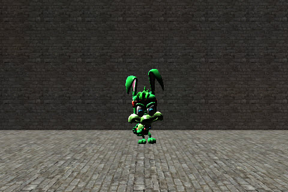
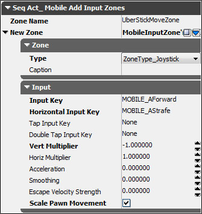
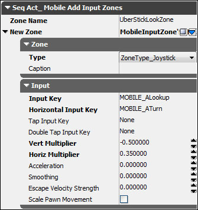
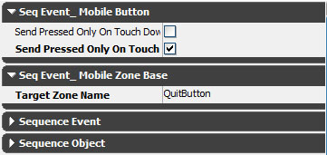
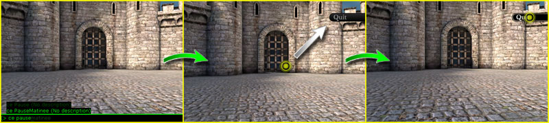
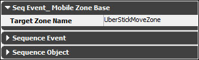
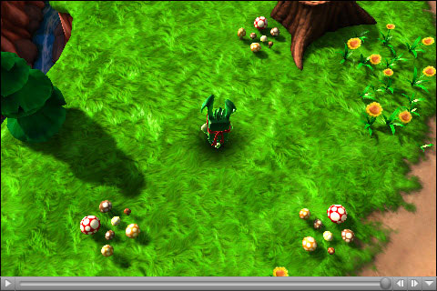
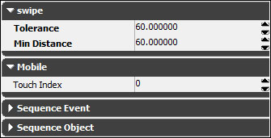
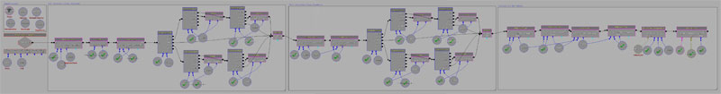

UDN
Search public documentation:
MobileInputSystemCH
English Translation
日本語訳
한국어
Interested in the Unreal Engine?
Visit the Unreal Technology site.
Looking for jobs and company info?
Check out the Epic games site.
Questions about support via UDN?
Contact the UDN Staff
日本語訳
한국어
Interested in the Unreal Engine?
Visit the Unreal Technology site.
Looking for jobs and company info?
Check out the Epic games site.
Questions about support via UDN?
Contact the UDN Staff
移动设备输入系统
概述
有三种管理设备上的触摸及运动输入的方法。最简单的方法是通过MobileInputZones(移动设备输入区域)，可以把它想象为预先设计的输入子系统。如果输入区域不能满足您的控制级别要求，那么可以通过MobilePlayerInput类中的几个代理来以Unrealscript的方式来管理整个输入系统。最后，可以使用一些Kismet事件和动作来快速地创建原型。
MobilePlayerInput
MobilePlayerInput 类是移动设备平台上从玩家获得输入的核心。它从设备的屏幕获得触摸输入，并从设备的各种运动传感器上获得运动输入。然后通过属性和访问函数(或者某些情况下是delegate (代理))来提供到这些输入的访问权。
MobilePlayerInput 定义为 within(GamePlayerController) ，意味着它仅能在类层次结构中直接或间接继承 GamePlayerController 的类中使用。要想强制使用 MobilePlayerInput ，则需要在您的自定义的 PlayerController 类的 defaultproperties 代码块中将 MobilePlayerInput 分配给 InputClass 属性。
defaultproperties
{
InputClass=class'GameFramework.MobilePlayerInput'
}
MobilePlayerInput 属性
菜单
- InteractiveObject - 当前正在和用户交互的对象。比如，如果用户按下一个按钮，那么直到用户抬起它们的手指产生UnTouch事件时它才变为
InteractiveObject。 - MobileMenuStack - 这个数组存放了一堆移动设备菜单页面，以便进行渲染及向其传递输入。请参照移动设备技术指南页面获得关于移动设备菜单页面的更多信息。
运动
- MobilePitch（移动设备倾斜度） - 如果设备具有陀螺仪，该属性设置了陀螺仪的当前倾斜值。
- MobilePitchCenter（移动设备倾斜度的中间值） - 设备倾斜度的中间值。
- MobilePitchMultiplier（移动设备倾斜度乘数） - 移动设备倾斜度的缩放因数，调整对倾斜运动的敏感度。
- MobileYaw（移动设备偏转值） - 如果设备具有陀螺仪，该属性设置了陀螺仪的当前偏转值。
- MobileYawCenter（移动设备偏转度的中间值） - 设备偏转度的中间值。
- MobileYawMultiplier（移动设备偏转度乘数） - 移动设备偏转度的缩放因数，调整对偏转运动的敏感度。
- MobilePitchDeadzoneSize（移动设备倾斜值死区尺寸） -
MobilePitch针对输入必须考虑的到MobilePitchCenter的距离。如果运动输入用于游戏中的控制那么这项是有用的。 - MobileYawDeadzoneSize（移动设备偏转值死区尺寸） -
MobileYaw值针对输入必须考虑的到MobilePitchCenter的距离。如果运动输入用于游戏中的控制那么这项是有用的。 - DeviceMotionAttitude(设备运动姿势) - 一个
Vector，描述了设备的姿势或方位。- X - 代表围绕从屏幕径直伸出的轴旋转。
- Y - 仅当设备具有陀螺仪时有效。
- Z - 代表围绕设备的水平轴旋转。
- DeviceMotionRotationRate（设备运动旋转速率） - 一个
Vector，存放了设备姿势的改变速率。这个值在具有陀螺仪的设备上更加精确。 - DeviceMotionGravity（设备运动重力） - 一个
Vector，存放了设备的重力向量。仅当设备具有陀螺仪时有效。 - DeviceMotionAcceleration（设备运动加速度） - 一个
Vector，存放了设备的当前线性加速度。仅当设备具有陀螺仪时有效。 - bDeviceHasGyroscope（设备是否具有陀螺仪） - 如果设备具有陀螺仪则该项为TRUE。
- DeviceGyroRawData（设备陀螺仪原始数据） - 一个
Vector，存放了原始的陀螺仪运动数据。值的范围是[0.0, 1.0]。 - bDeviceHasAccelerometer(设备是否具有加速器) - 如果设备具有加速器则该项为TRUE。
- DeviceAccelerometerRawData（设备加速器原始数据） - 一个
Vector，存放了原始的加速器数据。值的范围是[0.0, 1.0]。- X - Roll(旋转)。代表围绕从屏幕向外径直深处的轴旋转。
- Y - Portrait Pitch(肖像倾斜)。代表围绕肖像方位中的水平轴旋转。
- Z - Lanscape Pitch（景观倾斜）。代表围绕景观方位中的水平轴旋转。
- MobileSeqEventHandlers（移动设备序列事件处理器） - Motion事件上要监听的一组
SeqEvent_MobileBase事件。-
 注意： 它自从2012年2月UDK版本后还在使用
注意： 它自从2012年2月UDK版本后还在使用
-
- aTilt - 一个描述移动设备的当前方位的向量。（在2012年2月份的UDK版本中使用）
- aRotationRate - 一个描述倾斜的改变速率的向量。（在2012年2月份的UDK版本中使用）
- aGravity - 一个描述移动设备检测到的重力的向量。（在2012年2月份的UDK版本中使用）
- aAcceleration - 一个描述移动设备检测到的线性加速度的向量。（在2012年2月份的UDK版本中使用）
Touch（触摸）
- NumTouchDataEntries - 常量。设置同时跟踪的触摸的数量。将它设置为 5。
- Touches（触摸） - 一个
TouchData结构体数组，代表正在跟踪的触摸。 - MobileDoubleTapTime(移动设备双击时间) - 将‘点击’操作注册为‘双击’时允许在每次‘点击’之间允许的最大时间量。
- MobileMinHoldForTap（注册为点击必须保持触摸的最小时间量） - 将触摸注册为一次 ‘点击’需要保持触摸状态的最小时间量，以秒为单位。
- MobileTapRepeatTime（移动设备点击重复时间） - 针对持续的触摸隔多长时间发送一次触摸事件。
- bAllowTouchesInCinematic - 如果该项为TRUE，那么允许及注册过场动画序列过程中的触摸输入。
- bDisableTouchInput - 如果该项为TRUE，那么触摸将不会被注册为输入。
- bFakeMobileTouches - 如果该项为TRUE，那么游戏使用
-simmobile或-simmobileinput命令行参数运行。 - MobileInactiveTime - 不注册触摸输入的时间量，以秒为单位。
- MobileRawInputSeqEventHandlers - 在原始触摸事件上要监听的一组
SeqEvent_MobileRawInput事件。
Zones（区域）
- MobileInputGroups - 一组可用的输入MobileInputGroups（移动设备输入组）。
- CurrentInputGroup - 引用当前激活的MobileInputGroup（移动设备输入组）。
- 注意： 它自从2012年2月份的UDK版本就被重命名为 CurrentMobileGroup
-
- MobileInputZones - 一组现有的MobileInputZones（移动设备输入区域）。
- MobileInputZoneClasses - 一组映射到MobileInputZones（移动设备输入区域）的类名称。
- ZoneTimeout - 在认为一个区域已经过期之前区域可以在没有输入的情况下运行的最大时间量。
MobilePlayerInput 代理
- OnInputTouch() [Handle] [Type] [TouchLocation] [DeviceTimestamp] - 当发生任何触摸事件时引擎会调用它。
- OnMobileMotion() [PlayerInput] [CurrentAttitude] [CurrentRotationRate] [CurrentGravity] [CurrentAcceleration] - 当设备上发生运动时引擎调用该项。*注意:* 根据设备硬件的不同，重力和加速度可能无效。 注意： 它在2012年2月份UDK版本中不再存在
- PlayerInput - 到具有代理的
PlayerInput的引用。 - CurrentAttitude - 一个
Vector，存放了设备的当前的姿势信息(倾斜度、偏转度、旋转度)。*注意：* YAW仅当设备具有陀螺仪的设备才有效。 同时，这些值在地形中和肖像中是独立的。 - CurrentRotationRate - 一个
Vector（向量），存放了设备姿势的当前改变速率。这个值在具有陀螺仪的设备上更加精确。 - CurrentGravity - 一个
Vector（向量），存放了设备的重力向量。仅当设备具有陀螺仪时有效。 - CurrentAcceleration - 一个
Vector（向量），存放了设备的当前线性加速度。仅当设备具有陀螺仪时有效。
- PlayerInput - 到具有代理的
- OnTouchNotHandledInMenu() - 在移动菜单没有处理
Touch_Began时调用。 - OnPreviewTouch() [X] [Y] [TouchpadIndex] - 为进行处理/未进行处理的触摸返回true/false。
- X - 屏幕空间X坐标
- Y - 屏幕空间Y坐标
- TouchpadIndex - 触摸的是哪一个触摸板
MobilePlayerInput函数
Initialization
- InitInputSystem() - 当创建输入系统后由
PlayerController调用该函数。目前它会强制初始化触摸输入系统。子类应该重载这个函数来执行其它的初始化。 - ClientInitInputSystem() - 当创建输入系统后由客户端调用该函数。目前它会强制初始化触摸输入系统。子类应该重载这个函数来执行其它的初始化。
- InitTouchSystem() - 如果启用了移动设备仿真或者游戏正在移动设备上运行那么该函数会设置触摸输入系统。
- NativeInitializeInputSystem() - Native。由输入子系统的
InitTouchSystem()native初始化函数调用该函数。 - InitializeInputZones() - 从游戏类型中查找需要的输入区域，并初始化它们。
- NativeInitializeInputZones() - Native。该函数由
InitializeInputZones()调用，来通过迭代输入区域并根据当前设备的分辨率来计算它们的边界来初始化这些输入区域。
Input Events（输入事件）
- SendInputKey() [Key] [Event] [AmountDepressed] - 发送输入按键事件，比如按下键盘上的按键。这提供了手动地将移动设备输入转换为标准的按键输入的功能。
- Key - 针对其发生事件的按键的
Name（名称）。(KEY_Up, KEY_Down, 等) - Event - 输入事件的
EInputEvent类型。(IE_Pressed,IE_Released,IE_Repeat_,IE_DoubleClick,IE_Axis) - AmountDepressed - 针对模拟按键所按下这个按键的数量。
- Key - 针对其发生事件的按键的
- SendInputAxis() [Key] [Delta] [DeltaTime] - 发送一个输入轴事件，比如操纵杆、摇杆或鼠标运动。这提供了手动地将移动设备输入转换为标准的控制输入的功能。
- Key - 移动的轴的
Name（名称）。(KEY_MouseX、KEY_XboxTypeS_LeftX等。) - Delta - 轴移动的量。
- DeltaTime - 自从上一次更新轴所过去的时间，以秒为单位。
- Key - 移动的轴的
Input Zones（输入区域）
- FindZone() [ZoneName] - 按照名称从
MobileInputZones数组中搜索并返回一个输入区域。- ZoneName - 一个
String(字符串)，指出了要搜索的输入区域的名称。
- ZoneName - 一个
- FindorAddZone() [ZoneName] - 按照名称从
MobileInputZones数组中搜索并返回一个输入区域。如果没有找到输入区域，则创建一个新的输入区域，并将其添加到MobileInputZones数组，返回到这个新的区域的引用。- ZoneName - 一个
String(字符串)，指出了要 搜索 和/或 添加 的输入区域的名称。
- ZoneName - 一个
- HasZones() - 返回
MobilePlayerInput当前是否具有任何输入区域。 - GetCurrentZones() - 返回和当前输入组相关的所有输入区域，将这些区域作为一个
MobileInputZones数组返回。 - ActivateInputGroup() [GroupName] - Exec（可执行函数）。设置新的输入组为激活状态，从而使它可以接收输入。
- GroupName - 一个
String(字符串)，指出了要设置为激活状态的输入组的名称。
- GroupName - 一个
- SetMobileInputConfig() [GroupName] - Exec（可执行函数）。设置新的输入组为激活状态，从而使它可以接收输入。
- GroupName - 一个
String(字符串)，指出了要设置为激活状态的输入组的名称。
- GroupName - 一个
Kismet
- RefreshKismetLinks() - 在关卡的Kismet序列中注册所有
SeqEvent_MobileBase和SeqEvent_MobileRawInput事件，并将它们分配为处理器。 - AddKismetEventHandler() [NewHandler] - 添加一个
SeqEvent_MobileBaseKismet事件作为新的移动设备事件处理器，当运动发生时该处理器将接受输入事件。 - AddKismetRawInputEventHandler() [NewHandler] - 添加一个
SeqEvent_MobileRawInputKismet事件作为新的移动设备事件处理器，当触摸发生时该处理器将接受输入事件。
Menu Scenes（菜单页面）
- OpenMenuScene() [SceneClass] [Mode] - 打开给定类的新菜单页面。返回到打开的页面的引用。
- SceneClass - 指出了要打开的菜单页面的类。必须是
MobileMenuScene的子类。 - Mode - 可选的。指出了一个传入到页面的
Opened()函数的字符串。
- SceneClass - 指出了要打开的菜单页面的类。必须是
- CloseMenuScene() [SceneToClose] - 关闭指定的菜单页面。
- SceneToClose - 引用要关闭的页面。
- CloseAllMenus() - 关闭页面栈中所有的菜单页面。
- RenderMenus() [Canvas Canvas] [RenderDelta] - 每帧中引擎调用该函数来渲染页面栈中的所有菜单。
- Canvas - 引用用于描画页面的
Canvas(画布)。 - RenderDelta - 存放了自从上一次渲染虚幻所过去的时间量。
- Canvas - 引用用于描画页面的
- MobileMenuCommand() [MenuCommand] - Exec（可执行函数）。传入一个命令给栈中的所有页面，直到其中一个页面处理了该命令并返回TRUE。
- MenuCommand - 一个
String（字符串），指出了传给页面的命令。
- MenuCommand - 一个
- OpenMobileMenu() [MenuClassName] - Exec（可执行函数）。以字符串的形式打开给定类的菜单页面。
- MenuClassName - 以字符串的形式指定要打开的菜单页面的类的名称。
- OpenMobileMenuMode() [MenuClassName] [Mode] - Exec（可执行函数）。以字符串的形式打开给定类的菜单页面，具有可选模式。
- MenuClassName - 以字符串的形式指定要打开的菜单页面的类的名称。
- Mode - 可选的。指出了一个传入到页面的
Opened()函数的字符串。
TouchDataEvent
TouchDataEvent 结构体包含了针对排队等待特定触摸处理的单独触摸事件的数据。每次检测到一次触摸的触摸事件时，将会构建一个新的 TouchDataEvent 来存放那个特定事件的数据。然后输入系统会按照顺序尽快地处理这些数据。
- EventType - 触摸事件的
ETouchType类型。 - TouchpadIndex - 它来自什么触摸板。
- Location - 在屏幕坐标系中触摸事件的
Vector2D位置(以像素为单位)。 - DeviceTime - 事件发生时的时间戳。
TouchData
TouchData 结构体存放了一次特定触摸在其整个生命周期中的所有信息，即从用户第一次触摸屏幕到用户将他们的手指离开屏幕这段时间内的所有信息。设备上当前激活的触摸存储在 Touches 数组中，允许您访问设备上触摸输入的当前状态。
- Handle - 一个
Int型值，指出了这次独立触摸的唯一ID。 - TouchpadIndex - 它来自什么触摸板。
- Location - 一个
Vector2D（二维向量），根据最近一次触摸事件存放了触摸的当前位置（在屏幕空间中）。 - TotalMoveDistance - 触摸自从初始触摸事件后已经移动的总距离，以像素为单位。
- InitialDeviceTime - 从初始触摸事件发生时的时间戳。
- TouchDuration - 触摸已经激活的时间长度，以秒为单位。
- MoveEventDeviceTime - 从这个触摸的最近一次触摸事件开始的时间戳。
- MoveDeltaTime - 运动事件和触摸最后一次移动之间的时间量，以秒为单位。
- bInUse - 如果该项为TRUE，那么则正在使用该触摸项。否则，它将不再激活，并且不能适用于一次新的触摸。
- Zone - 当前处理该触摸的
MobileInputZone。 - State - 这个触摸的最近触摸事件的
EZoneTouchEvent类型。请参照触摸事件部分获得更多信息。 - Events - 一个
TouchDataEvents的数组，存放了这个触摸在其整个生命周期上的所有触摸事件。 - LastActiveTime - 最后一次激活触摸的时间。这用于决定一个区域是否已经到时。
Input Zones（输入区域）
输入区域从本质上讲是触摸控制，它可以从触摸屏幕设备上获得输入，并将输入转换为可以使用的数据。就像按键绑定可以取入按键按下输入，并将其转换为游戏可以使用的数据来控制玩家的运动或其他游戏中的事件，一个输入区域同样可以取入触摸输入并执行同样的功能。事实上，输入区域确实是用了同样的按键绑定系统来将输入绑定到了动作上，正如您稍后将看到的。
Input Groups（输入组）
一个输入组是一个相关输入区域的集合。比如，Epic Citadel示例游戏中的左侧控制杆和右侧控制杆输入一个单独的输入组中。每个游戏可以分配任何数量个输入组，并且在游戏过程中的任何时候都可以激活这些输入组中的任何一个。一个输入区域也可以属于多个输入组，从而使得多个游戏可以重用它们或者可以在一个游戏中将它们用于多个用途。MobileInputGroup 结构体用于代表一个输入组。它简单地对应一个唯一名称，从而通过构成这个组的一组输入区域来标识该组。
- GroupName - 一个
String(字符串)，指出了该输入组的唯一名称。 - AssociatedZones - 属于该输入组的一组
MobileInputZones(移动设备输入区域)。
RequiredMobileInputConfigs 数组中定义。关于这方面的更多信息，请参照定义输入组部分。
MobileInputZone
MobileInputZone 类是定义可以从用户获得触摸输入并将其转换为标准的UE3 输入/轴 事件的屏幕区域的基类。
MobileInputZone属性
General(一般)
- Type - 指定了输入区域类型的
EZoneType（按钮、控制杆、跟踪球、滑块）。请参照 输入区域类型部分获得更多信息。 - State - 说明了输入区域当前状态的
EZoneState。请参照输入区域状态 部分获得更多信息。 - SlideType - 如果该区域是个滑块 (
Type=ZoneType_Slider)，那么该项是描述了区域滑动方向的EZoneSlideType。 - InputOwner - 负责管理输入区域的
MobilePlayerInput。 - MobileSeqEventHandlers - 一个和输入区域相关联的
SeqEvent_MobileZoneBaseKismet 事件数组。
输入
- InputKey - 在输入事件上要从这个输入区域发送给输入子系统的输入按键的
Name（名称）。对于模拟输入类型，这项为沿着垂直轴的事件提供。 - HorizontalInputKey - 在输入事件上要从这个输入区域沿着水平轴发送给输入子系统的输入按键的
Name（名称）。仅用于模拟输入类型。 - TapInputKey - 在点击输入上要从这个输入区域发送给输入子系统的输入按键的
Name（名称）。 - DoubleTapInputKey - 在双击输入上要从这个输入区域发送给输入子系统的输入按键的
Name（名称）。 - VertMultiplier - 用于和沿着垂直轴的模拟输入相乘的缩放因数。决定了输入区域在垂直轴上的敏感度。
- HorizMultiple - 用于和沿着垂直轴的模拟输入相乘的缩放因数。决定了输入区域在水平轴上的敏感度。
- Acceleration - 应用给跟踪球输入区域运动的加速度量(实际上定义为: 每秒中的移动量)。
- Smoothing - 应用到跟踪球输入区域运动的输入平滑度。
- EscapeVelocity - 一个
Vector2D（二维向量），存放了当触摸结束后要应用的垂直和水平输入运动。这和惯性运动类似，比如在iOS设备上的滚动列表中看到的现象，即时触摸结束列表仍会继续滚动。 - EscapeVelocityStrength - 指出每次更新所使用的逃逸速度的值。这个值的范围是[0.0, 1.0]。值越高，衰减速率越快。
- bScalePawnMovement - 如果该项为TRUE，那么区域的输入值将会和本地 PlayerController的Pawn的
MovementSpeedModifier值相乘。 - bQuickDoubleTap - 如果该项为TRUE，那么双击在将会在触摸事时导致
DoubleTapInputKey出现简单的按下和释放 (IE_Pressed, IE_Release) 。否则，双击将会在触摸事件时导致DoubleTapInputKey的按下(IE_Pressed)，每次更新事件时导致DoubleTapInputKey的重复(IE_Repeat) ，当发生取消触摸或取消事件时导致出现DoubleTapInputKey的释放(E_Release)。 - TapDistanceConstraint - 对于一次可以认为是点击的触摸中允许触摸可以从触摸事件向取消触摸事件移动的最大距离。
- bAllowFirstDeltaForTrackballZone - 如果该项为TRUE，那么将会使用跟踪球区域的第一个运动间隔。否则，将会忽略跟踪球区域的第一个运动间隔。 这对于具有不稳定‘死区’的设备的初始触摸间隔使有用的，但是这将会稍微降低跟踪球拖拽操作的灵敏度。
- InitialLocation - 当这个区域内发生新的触摸时触摸事件的初始位置。
- CurrentLocation - 区域中触摸的当前位置。仅应用于控制杆和跟踪球区域。
- InitialCenter - 区域的实际中心，假设区域边界。用于通过使用
bCenterOnTouch=true（通常是）重置区域。 - CurrentCenter - 用作为输入事件中心的当前位置。当新的触摸发生时，通过使用
bCenterOnTouch=true（通常是控制杆区域）更新为区域的初始触摸位置。 - PreviousLocations - 当在几个帧范围内平滑输入时要使用的区域的最近六次的触摸事件的位置。仅应用于控制杆和跟踪球区域。
- PreviousMoveDeltaTimes - 当在几个帧范围内平滑输入时要使用的区域的最近六次的触摸事件的时间间隔。仅应用于控制杆和跟踪球区域。
- PreviousLocationCount - 当前正在存储的先前触摸位置和时间间隔的数量，以便在几个帧范围内平滑输入时使用。
- LastTouchTime - 区域中最后一次触摸事件的时间。用于确定点击是否是双击。
- TimeSinceLastTapRepeat - 自从按钮区域的
InputKey的上一次重复(IE_Repeat)所过去的时间量。 - bIsDoubleTapAndHold - 如果所发生的双击不是‘快速双击’则设置该项为TRUE。这是需要的，以便发送
DoubleTapInputKey的重复和释放事件(IE_Repeat, IE_Release)。 - LastAxisValue - 一个
Vector2D（二维向量），存放了上一次更新的缓冲输入值。仅应用于控制杆和跟踪球区域。 - TotalActiveTime - 区域已经激活的时间量。
- LastWentActiveTime - 区域最后一次从非激活状态变为激活状态的时间。
Position and Size（位置和大小）
- [X/Y] - 输入区域的左上角在屏幕坐标空间中的水平和垂直位置。(根据是否设置了
bRelative[X/Y]，它或者以像素为单位或者是相对值。) - Size[X/Y] - 输入区域的宽度和高度。(根据是否设置了
bRelative[X/Y]，它或者以像素为单位或者是相对值。) - ActiveSize[X/Y] - ’激活区域‘的宽度和高度。请参照 大小和位置部分获得更多信息。
- bRelative[X/Y] - 如果该项为TRUE，那么将假设区域左上角的水平位置或垂直位置为范围 [0.0, 1.0]内的相对值。
- bRelativeSize[X/Y] - 如果该项为TRUE，那么将假设区域的宽和高是范围 [0.0, 1.0]内的相对值。
- bActiveSizeYFromX - 如果该项为TRUE，那么则假设
ActiveSizeY的值是相对于ActiveSizeX的值。 - bSizeYFromSizeX - 如果该项为TRUE，那么择假设
SizeY的值是相对于SizeX的值。 - bAppleGlobalScaleToActiveSizes - 如果该项为TRUE，那么将会把水平和垂直全局缩放因数应用给
ActiveSize[X/Y]的值。这对于在具有不同分辨率或屏幕尺寸的设备上保持控件的精确尺寸是有用的。 - bCenter[X/Y] - 如果该项为TRUE，那么区域将以配置中指定的
[X/Y]值居中，而不是让它们代表区域的左上角。然后，将会更新[X/Y]的值来反映区域的实际左上角。 - bCenterOnEvent - 如果该项为TRUE，那么区域的
CurrentCenter将调整为所有新的触摸事件的位置处。这对于创建那些根据用户触摸自动调整位置的控件(在一定区域内)是有用的，比如Epic Citadel中的控制杆。 - ResetCenterAfterInactivityTime - 如果
bCenterOnEvent为TRUE，那么该项是个非零值， 当区域为非激活状态的时间量超过这个值后，=CurrentCenter= 的位置将会被重置为它的InitialCenter。 - Border - 在决定触摸是否在区域内时所包含的区域外部周围的距离。
- bFloatingTiltZone - 如果该项为TRUE，那么倾斜区域将会在
Size[X/Y]内浮动。看上去还没有使用。
渲染
- OverrideTexture[1/2] - 指出了用于覆盖区域贴图的
Texture2Ds。 * 对于Button(按钮)区域,OverrideTexture1是当按钮为非激活状态时描画的贴图，OverrideTexture2是按钮为激活状态时描画的贴图。 * 对于Trackball(跟踪球)和 Joystick（控制杆）区域，OverrideTexture1作为背景描画(Citadel中的空心圆)，OverrideTexture2使跟随指针的”帽子“。 * 对于Slider（滑块） 区域来说,OverrideTexture1是滑块图像，OverrideTexture2没有使用。 - OverrideTexture[1/2]Name - 一个指定了贴图完整路径的字符串，比如 "Package.Group.Name"。
- OverrideUVs[1/2] - 指出了用于描述要描画的OverrideTexture[1/2]的子区域的贴图UVs，以贴图像素为单位(即贴图像素值)。
- Caption - 为这个区域现实的文本。目前它仅用于按钮，文本会描画在区域的中心处。
- Caption[X/Y]Adjustment -区域的
Caption位置的水平和垂直偏移量，从而可以精确地调整文本来正确地排列字体。 - bIsInvisible - 如果该项为TRUE，将会渲染区域。
- bUseGentleTransitions - 如果该项为TRUE,那么区域将会从可视化地非激活状态逐渐变为激活状态，反之亦然。否则，将会立即看到这个改变。。*注意:* 这纯粹是个视觉效果。区域的实际状态在触摸开始或结束时会立即发生改变。
- ActivateTime - 区域可视化地从非激活状态变为激活状态所花费的时间。
- DeactivateTime - 区域可视化地从激活状态变为非激活状态所花的时间。
- bRenderGuides - 如果该项为TRUE，那么将会渲染区域的调试线。目前这仅用于控制杆区域，会从区域的
CurrentCenter到joystick hat(控制杆帽子)位置处描画一条直线。 - RenderColor - 描画区域时使用的
Color（颜色）。这将会调制构成区域可视化效果的任何图像或文本。在MobileHUD中调用适当的区域描画函数之前，=Canvas(画布)= 描画颜色就被设置为了这个颜色。 - InactiveAlpha - 当区域为非激活状态时描画区域所使用的不透明度。
- AnimatingFadeOpacity - 当区域变为非激活状态一段时间后重置区域中心时淡入淡出效果所使用的当前不透明度。
- TransitionTime - 当区域从非激活状态变为激活状态的过程中或从激活状态变为非激活状态所过去的时间量。
MobileInputZone代理
- OnProcessInputDelegate() [Zone] [DeltaTime] [Handle] [EventType] [TouchLocation] - 当区域中发生任何输入事件时调用该项，允许对任何区域或有其他类处理的区域中的输入进行完全的自定义输入处理。返回TRUE表明已经处理了输入。返回FALSE将会传递输入，根据区域类型的不同在
ProcessTouch()函数中处理它。- Zone - 到代理所属的区域的引用。
- DeltaTime - 自从区域的上一次输入事件所过去的时间量。
- Handle - 负责输入事件的触摸的唯一标示符。
- EventType - 输入事件的
EZoneTouchEvent类型。 - TouchLocation -该项是个
Vector2D（二维向量），指出了 屏幕空间坐标中的触摸事件的水平和垂直位置，以像素为单位。
- OnTapDelegate() [Zone] [EventType] [TouchLocation] - 当区域中发生点击时调用该项，允许对点击和由其他类处理的区域中的点击进行完全的自定义处理。返回TRUE表明已经处理了点击。返回FALSE将会传递点击操作，在
ProcessTouch()函数中处理它。- Zone - 到代理所属的区域的引用。
- EventType - 输入事件的
EZoneTouchEvent类型。 - TouchLocation -该项是个
Vector2D（二维向量），指出了 屏幕空间坐标中的触摸事件的水平和垂直位置，以像素为单位。
- OnDoubleTapDelegate() [Zone] [EventType] [TouchLocation] - 当区域中发生双击时调用该项，允许对双击和由其他类处理的区域中的双击进行完全的自定义处理。返回TRUE表明已经处理了双击操作。返回FALSE将会传递双击操作，在
ProcessTouch()函数中处理它。- Zone - 到代理所属的区域的引用。
- EventType - 输入事件的
EZoneTouchEvent类型。 - TouchLocation -该项是个
Vector2D（二维向量），指出了 屏幕空间坐标中的触摸事件的水平和垂直位置，以像素为单位。
- OnProcessSlide() [Zone] [EventType] [SlideValue] [ViewportSize] - 当输入事件发生在滑块区域中时调用该项，允许访问滑块的值。目前返回值还没有使用。
- Zone - 到代理所属的区域的引用。
- EventType - 输入事件的
EZoneTouchEvent类型。 - SlideValue - 滑动的位置，是指到正常静止位置的像素偏移量[+/-]。
- ViewportSize - 当前视口的维度，比如设备的屏幕。
- OnPreDrawZone() [Zone] [Canvas] - 当
MobileHUD渲染区域之前立即调用该项，从而允许自定义区域或者任何其他Actor覆盖区域的描画。返回TRUE，代表中止了正常的区域渲染。- Zone - 到代理所属的区域的引用。
- Canvas - 引用用于描画的
Canvas(画布)。
- OnPreDrawZone() [Zone] [Canvas] - 当
MobileHUD渲染区域之后立即调用该项，允许自定义区域或者任何其他Actor补充区域的描画。- Zone - 到代理所属的区域的引用。
- Canvas - 引用用于描画的
Canvas(画布)。
MobileInputZone函数
- ActivateZone() - 根据
bUseGentleTransitions的值的不同，设置输入区域为ZoneState_Activating或ZoneState_Active状态。 - DeactivateZone() - 根据
bUseGentleTransitions的值的不同设置输入区域为ZoneState_Deactivating或ZoneState_Inactive状态。 - AddKismetEventHandler() [NewHandler] - 将一个新的移动设备输入Kismet事件和当区域中发生触摸时将要接受事件的输入区域相关联。
- NewHandler - 引用
SeqEvent_MobileZoneBase，添加作为新的处理器。
- NewHandler - 引用
输入区域类型
- Button -
ZoneType_Button区域类型创建一个具有2个状态的区域： 按下和未按下。 当从按下状态变为未按下状态时它将会发送它的InputKey （输入按键）。
- Joystick -
ZoneType_Joystick区域类型创建一个具有虚拟控制杆的区域，允许您快速地模拟设备上的 游戏手柄/游戏控制杆。 InputKey(输入按键)定义了当沿着垂直访问的运动发生时将要发送的绑定。 当水平访问移动发生时发送HorizontalInputKey。 - Trackball -
ZoneType_Trackball区域类型创建一个处理一般触摸和扫过操作的区域。当您添加一个跟踪球区域时，滑动您的手指穿过那个区域将会和旋转跟踪球产生同样的效果。 和上面的ZoneType_Joystick一样，InputKey用于垂直运动，HorizontalInputKey用于水平运动。 - Slider -
ZoneType_Slider区域类型创建一个可以沿着锁定轴滑动一个子区域的区域。 SliderZone要和脚本代理结合使用来管理它的值。 请参照Citadel获得示例。
输入区域状态
- Inactive - 输入区域当前处于非激活状态
- Activating - 输入区域变为激活状态
- Active - 输入区域处于激活状态
- Deactivating - 输入区域变为非激活状态
渲染和外观
渲染输入区域的覆盖层由MobileHud 处理。如果您想改变它们的外观，您可以重载各种 DrawMobileZone_xxxx 函数。
您或许也可以通过在区域中使用以下属性来覆盖一些基本的外观： (请参照MobileInputZone渲染属性部分获得关于这些属性的介绍。）
- OverrideTexture[1/2]
- OverrideTexture[1/2]Name
- OverrideUVs[1/2]
大小和位置
区域的大小和位置由X 、=Y= 、 SizeX 和 SizeY 成员变量处理。 关于大小和位置，有几个非常重要的事情需要注意。 第一个和使用负数有关。 可以使用负数来从视口的 右侧/底部 边缘开始来确定某些东西的位置或大小。 比如，有一个区域的 SizeX 32= 和 X -32= ，那么它将和屏幕右侧边缘相齐平。 另外，还有几个可以设置的标志，设置它们可以使引擎使用这些值作为视口的百分比。 所以，如果区域设置 bRelativeX = true ，那么X的值将会被当做视口的SizeX的百分比对待。 最后，可以使用 bSizeYFromSizeX 来确保在变化的分辨率中使用正确的屏幕高宽比(比如： iPad对iPod）。
除了 X 、 Y 、 SizeX 和 SizeY 外，还有 ActiveSizeX 和 ActiveSizeY 。 这些可以用于定义一个”区域中的区域“。 这个意思是说可以使用 X 、 Y 、 SizeX 和 SizeY 属性定义区域的边界，但是区域中实际作为控件的激活部分是由 ActiveSizeX 和 ActiveSizeY 属性定义的。这通常用于和"以触摸为主"的控件结合使用，比如Epic Citadel中的控制杆，它随着您触摸特定区域内的屏幕的位置而移动。
添加输入区域
每个输入区域都定义在DefaultGame.ini 配置文件中。=MobileInputZone= 系统使用基于每个对象的配置来管理及加载各种区域。这意味着每个输入区域将会在配置文件中它自己的部分出进行定义。可以在配置文件中定义输入区域的部分设置使用 config 修饰符生命的任何属性。
移动设备输入区域定义的示例如下所示：
[UberStickMoveZone MobileInputZone] InputKey=MOBILE_AForward HorizontalInputKey=MOBILE_AStrafe Type=ZoneType_Joystick bRelativeX=true bRelativeY=true bRelativeSizeX=true bRelativeSizeY=true X=0.05 Y=-0.4 SizeX=0.1965 SizeY=1.0 bSizeYFromSizeX=true VertMultiplier=-1.0 HorizMultiplier=1.0 bScalePawnMovement=true RenderColor=(R=255,G=255,B=255,A=255) InactiveAlpha=0.25 bUseGentleTransitions=true ResetCenterAfterInactivityTime=3.0 ActivateTime=0.6 DeactivateTime=0.2 TapDistanceConstraint=5
定义输入组
现在，任何继承于FrameworkGame 的GameType(游戏类型)都可以定义一系列的需要的移动设备输入配置或输入组。每个配置由定义了配置的名称和一系列需要包括的区域组成。在输入组中指定输入区域的顺序是非常重要的。这个顺序定义了树传入到输入区域的顺序，当输入传入到一个输入区域并且它在那个区域的边界内时，将会处理该输入，并且不会再将其传递到任何后续区域。如果输入组具有多个相互重叠的多个区域时这会产生一些问题。比如，如果一个输入区域是全屏，并且在任何其他输入区域之前添加了该区域，那么后续区域将永远不能接收输入。
这是 Epic Citadel中所使用的 CastleGame 游戏类型的移动设备输入配置部分：
[MobileGame.CastleGame]
+RequiredMobileInputConfigs=(GroupName="UberGroup",RequireZoneNames=("MenuSlider","UberStickMoveZone","UberStickLookZone","UberLookZone"))
+RequiredMobileInputConfigs=(bIsAttractModeGroup=true,GroupName="AttractGroup",RequireZoneNames=("MenuSlider","ExitAttractModeZone"))
+RequiredMobileInputconfigs=(GroupName="InitialFlybyGroup")
+RequiredMobileInputConfigs=(GroupName="TapTutorialGroup",RequireZoneNames=("MenuSlider","TapTutorialZone"))
+RequiredMobileInputConfigs=(GroupName="SwipeTutorialGroup",RequireZoneNames=("MenuSlider","SwipeTutorialZone"))
bAllowAttractMode=true
MobileInputZones 。当前游戏类型的每个输入区域都已经进行了实例化并存储在了 MobilePlayerInput 类的本地实例中。这里重要的部分是 RequireZoneNames 数组需要存放在ini文件中每个对象配置创建所使用的名称。 请参照 MobilePlayerInput 类中的 InitializeInputZones() 来查看代码。您可以通过在 MobilePlayerInput 上调用 ActivateInputGroup() 来修改激活的输入组。
调试
区域的调试输入是复杂的。 我们已经尝试使它尽可能地简单。 首先，在PC上有一个完全有效的仿真模式。如果您使用以下命令行参数启动游戏：-simmobile或：
-simmobileinput游戏将使用鼠标来模拟一个单独的触摸环境。 另外，如果您使用命令行参数"-wxwindows"，那么您可以使用以下控制台命令：
editobject class=mobileplayerinput这将在实时系统中允许 查看/编辑 各种移动设备输入属性。 另外，有一些配置可以使得调试信息显示到HUD上。 它们是：
[GameFramework.MobileHUD] bDebugTouches=true bDebugZones=true bDebugZonePresses=true bShowMotionDebug=true这些是SET命令(比如：
set mobilehud bDebugTouches)。 在Citadel中试验这些命令吧。
您也可以使用UDK远程来把您的设备的输入发送到运行在PC上的引擎中。 关于获得及使用UDKRemote（UDK远程）应用程序更多信息，请参照UDK远程页面。
UnrealScript中的移动设备输入区域
在UnrealScript中，您可以通过
MobilePlayerInput 类中的几个代理来管理移动设备上的输入。您需要关心只有一个底层函数： 通过将函数分配给这个代理，您可以从能够直接通过虚幻脚本进行设置的移动设备中创建一个完全自定义的触摸输入处理。这可以在您游戏的自定义 PlayerController 中或任何其他需要处理移动设备上的输入的地方通过 MobilePlayerInput 的子类完成。
触摸输入
任何时候当用户触摸屏幕时，都认为是一次’触摸‘。输入系统可以同时跟踪多个触摸动作。每次触摸从用户开始接触屏幕开始持续，然后输入系统将进行跟踪直到用户停止触摸屏幕为止。Touch Events（触摸事件）
在触摸的整个过程中，它生成了不同类型的事件。这些类型可以用于决定在任何指定的时候如何对触摸动作做出反应。这些类型存储在一个名为 ETouchType 的枚举变量中，这个枚举变量在 Interaction.uc 中进行定义。- Touch_Began - 当用户接触或触摸设备时发送这个事件类型。它表示是一次新的独立触摸。
- Touch_Moved - 当第一次触摸发生时和触摸结束时之间每帧都发送这个事件。这个事件允许在触摸发生的整个生命周期内对其进行跟踪。
- Touch_Ended - 当触摸结束或者用于停止触摸设备时发送这个事件类型。它指出一个单独的触摸动作结束。
- Touch_Cancelled - 当外力（比如出现系统消息）取消了现有触摸动作时发送该类型事件。这也指出一次现有触摸动作结束。
- Touch_Stationary - 目前不会生成这个事件类型。
处理触摸动作
触摸输入系统的入口点是MobilePlayerInput 类中的代理。这个代理使您可以访问来自设备的未加处理的底层触摸数据。将其称为每帧多次返回的各种触摸信息。需要有程序员负责跟踪及管理从这里获得的信息。
- OnInputTouch [Handle] [Type] [TouchLocation] [DeviceTimestamp] -
- Handle -
Touches数组中标识这个触摸动作的索引。这个句柄在这次触摸的整个生命周期中是唯一的，但是在从一个触摸到另一个触摸是不唯一的。 - Type - 触摸事件的
ETouchType类型。请参照触摸事件部分获得关于所生成的各种类型事件的解释。 - TouchLocation - 一个
Vector2D（二维向量），存放了设备屏幕上触摸的水平和垂直位置，以像素为单位。 - DeviceTimestamp - 触摸的真正的底层时间戳。
- TouchpadIndex - 哪一个触摸板调用的这个代理。
- Handle -
拾取示例
很多不同类型的游戏都需要具有可以和世界中任何物品进行交互的功能，或者需要具有检测正在触摸那个物品的功能。这可以通过使用MobilePlayerInput 类中的 OnInputTouch() 代理和一个接口非常灵活地完成。接口的应用使得任何期望认为是’可触摸‘的类别都具有该功能，同时所需的代码非常简洁地支持该功能。
ITouchable 接口
ITouchable 接口非常简单。它声明了一个函数 OnTouch() ，将会在自定义的 PlayerController 类（下面进行详述）或者任何时候当实现了这个接口的Actor受到触摸时调用该函数。
Interface ITouchable; function OnTouch(ETouchType Type, float X, float Y);
MobilePlaceablePawn 的类就可以。
class UDNMobilePawn extends MobilePlaceablePawn implements(ITouchable);
function OnTouch(ETouchType Type, float X, float Y)
{
WorldInfo.Game.Broadcast(self, "Touched:"@self);
}
implements(ITouchable) 声明这个类必须定义属于 ITouchable 接口的所有函数；在这个实例中就是指 OnTouch() 函数。这提供了一种和任何应该是可触摸的物品进行交互的可靠方式。函数体仅向屏幕显示信息，显示物品已经受到触摸。
PlayerController 类
拾取对象的功能在PlayerController 类中进行实现， 它将是 GamePlayerController 的子类，因为使用移动设备触摸输入要求必须继承 GamePlayerController 类。
class UDNMobilePC extends GamePlayerController;
/** Holds the dimensions of the device's screen */ var vector2D ViewportSize; /** If TRUE, a new touch was detected (must be the only touch active) */ var bool bPendingTouch; /** Holds the handle of the most recent touch */ var int PendingTouchHandle; /** Holds the Actor that was selected */ var Actor SelectedActor; /** Maximum distance an Actor can be to be picked */ var float PickDistance; /** Maximum amount the mouse can move between touch and untouch to be considered a 'click' */ var float ClickTolerance; /** Cache a reference to the MobilePlayerInput */ var MobilePlayerInput MPI;
Trace() 函数结合使用的一对 Vectors（向量） ，从而可以决定是否触摸了任何东西。
/** find actor under touch location
*
* @PickLocation - Screen coordinates of touch
*/
function Actor PickActor(Vector2D PickLocation)
{
local Vector TouchOrigin, TouchDir;
local Vector HitLocation, HitNormal;
local Actor PickedActor;
//Transform absolute screen coordinates to relative coordinates
PickLocation.X = PickLocation.X / ViewportSize.X;
PickLocation.Y = PickLocation.Y / ViewportSize.Y;
//Transform to world coordinates to get pick ray
LocalPlayer(Player).Deproject(PickLocation, TouchOrigin, TouchDir);
//Perform trace to find touched actor
PickedActor = Trace(HitLocation, HitNormal, TouchOrigin + (TouchDir * PickDistance), TouchOrigin, true);
//Casting to ITouchable determines if the touched actor can indeed be touched
if(Itouchable(PickedActor) != none)
{
//Call the OnTouch() function on the touched actor
Itouchable(PickedActor).OnTouch(ZoneEvent_Touch, PickLocation.X, PickLocation.Y);
}
//Return the touched actor for good measure
return PickedActor;
}
PickActor() 函数。正如前面所说的，这需要使用 MobilePlayerInput 类的 OnInputTouch() 代理。首先，定义分配给这个代理的函数。
function HandleInputTouch(int Handle, ETouchType Type, Vector2D TouchLocation, float DeviceTimestamp)
{
local Actor PickedActor;
local int i;
//新建触摸事件
if(Type == Touch_Began)
{
//指定一个新的触摸出现
PendingTouchHandle = Handle;
bPendingTouch = true;
}
//正在处理的触摸
else if(Type == Touch_Moved)
{
for(i=0; i<MPI.NumTouchDataEntries; i++)
{
//测试距离触摸已经移动，如果移动得太远，那么取消触摸；如果移动得不远，更新触摸位置
if(MPI.Touches[i].Handle == PendingTouchHandle && MPI.Touches[i].TotalMoveDistance > ClickTolerance)
{
bPendingTouch = false;
}
}
}
//触摸结束
else if(Type == Touch_Ended)
{
//检查触摸是否处于激活状态
if(Handle == PendingTouchHandle && bPendingTouch)
{
//使actor被触摸
PickedActor = PickActor(TouchLocation);
//检查actor是否可触摸，按照所选项进行设置；如果不可触摸，那么清除当前所选项
if(ITouchable(PickedActor) != none)
{
SelectedActor = PickedActor;
}
else
{
SelectedActor = none;
}
//取消激活的触摸
bPendingTouch = false;
}
WorldInfo.Game.Broadcast(self, "SelectedActor:"@SelectedActor);
}
}
HandleInputTouch() 函数，则必须把它分配给 OnInputTouch() 代理。
event InitInputSystem()
{
Super.InitInputSystem();
//获取一个对本地MobilePlayerInput的引用
MPI = MobilePlayerInput(PlayerInput);
//访问这个代理的输入处理器函数
MPI.OnInputTouch = HandleInputTouch;
//获取屏幕规格（用于转换为DeProject的相对屏幕坐标）
LocalPlayer(Player).ViewportClient.GetViewportSize(ViewportSize);
}
InitInputSystem() 事件来初始化输入系统。在 Super.InitInputSystem(); 调用之前，应该初始化该系统并且本地 MobilePlayerInput 应该是可以访问的，从而允许将 HandleInputTouch 函数分配给它的 OnInputTouch 代理。
最后，对需要设值默认值的属性设置默认值。
defaultproperties
{
PickDistance=10000
ClickTolerance=5
InputClass=class'GameFramework.MobilePlayerInput'
}
GameType（游戏类型）
显然，PlayerController 包含这个新功能是必要的，以便在对象拾取过程中使用。这里展示了一个简单的游戏类型，它将强制使用新的PlayerController。
class UDNMobileGame extends FrameworkGame;
defaultproperties
{
PlayerControllerClass=class'UDNMobileGame.UDNMobilePC'
DefaultPawnClass=class'MobileGame.MobilePawn'
HUDType=class'GameFramework.MobileHUD'
bRestartLevel=false
bWaitingToStartMatch=true
bDelayedStart=false
}
DefaultEngine.ini 来制定默认要使用的新的游戏类型。
[Engine.GameInfo] DefaultGame=UDNMobileGame.UDNMobileGame DefaultServerGame=UDNMobileGame.UDNMobileGame DefaultGameType="UDNMobileGame.UDNMobileGame"
测试
使用PlayerStart 和一个 UDNMobilePawn 创建了一个简单的测试地图，通过使用Jazz Jackrabbit骨架网格物体放置 UDNMobilePawn 并且将其放置到 PlayerStart 的前面。

首先，在远离Jazz的地方触摸屏幕，结果显示没有触摸任何物品。 然后，直接触摸Jazz处的屏幕，结果显示触摸并选中了Jazz，正如我们所期望的。
然后，直接触摸Jazz处的屏幕，结果显示触摸并选中了Jazz，正如我们所期望的。

Motion Input(运动输入)
运动输入（Motion input）是指使用设备本身的方位和运动作为输入方式。不同设备支持不同的运动数据类型(或者一种也不支持)。具有加速器的设备提供了基本的方位和旋转度数据，然而对于这些具有更加复杂的仪器（比如陀螺仪）的设备而言，它们在提供精确的方位和旋转输入数据之外可能会产生额外的数据，比如线性运动。运动输入数据可以直接通过PlayerInput 中的属性获取。
Tilt（倾斜）
设备的倾斜指的是它的方位。因为设备的方位朝向是不同的，通过围绕不同的轴旋转设备，就会以倾斜、偏转和旋转的方式报告倾斜（通常是以向量的形式）。然后可以使用这些值来驱动游戏中的任何动作或游戏性元素。对于任何至少具有加速器的设备来说都有倾斜运动数据。 它存储在 PlayerInput.aTilt 内部。这个值在虚幻旋转器部件中。Rotation Rate（旋转速率）
旋转速率是指设备倾斜改变的速度。因为设备的方位朝向是不同的，所以它围绕某个轴旋转的速率决定了设备所报告的旋转速率的值。这个数据以Vector（向量） 的形式呈现，代表了倾斜、偏转和旋转的改变速率。在任何具有加速器的设备上都可以获得旋转速率，但是如果设备具有陀螺仪那么该数据会更加精确。
它存储在 PlayerInput.aRotationRate 内部。
Acceleration(加速度)
加速度值设备的线性运动。因为是可以沿着空间中的任何轴移动设备的，所以设备设备将这个线性运动报告为加速的数据，以Vector（向量） 的形式。这种类型的运动输入仅当设备具有陀螺仪时才有。
它存储在 PlayerInput.aAcceleration 内部
Gravity(重力)
一些设备同时还可以检测重力。 它存储在 PlayerInput.aGravity 内部Kismet中的移动设备输入
Kismet提供了几个用于设置及管理输入的动作和事件。如果你正在为您的游戏制作一次性关卡、并且您不想编辑.ini文件，或者如果您需要针对特定关卡的输入，那么该对象是有用的。 关于移动设备相关的Kismet对象的完整参考指南，请参照 移动设备Kismet参考指南页面。
Kismet中的移动设备输入区域
在Kismet中有几种管理输入区域的方式。这个移动设备动作允许添加及删除单独的输入区域或者清除所有的输入区域。添加及删除输入区域
可以通过在Kismet中使用移动设备输入动作直接地添加及删除输入区域： Clear Input Zones 、 Add Input Zones 和 Remove Input Zones 。这对于快速地进行原型设计或专门的针对关卡的输入是非常有用的。原型设计及测试输入区域不需要关闭编辑器，编辑一个.ini文件，重新打开编辑器，然后再次运行关卡，这对于通过Kismet管理输入区域是大有裨益的，可以节约时间。_Add Input Zone（添加输入区域）_ 动作使您可以完全地控制输入区域的位置和大小及所有其他重要的属性。可以在游戏过程中使用这些动作来限制或重新配置现有的输入区域来自定义用户体验。比如，一个特殊的关卡可能有个事件，该事件仅在玩家具有一个非常特殊的输入方法时发生，并且这个过程中不允许游戏中的任何正常输入出现。这可以通过使用这些动作简单地完成。 以下是从默认MobileGame中获得标准输入区域的示例，并提供了在游戏过程中修改它们来限制玩家的输入选择然后重新保存默认输入的功能。 Kismet序列： (点击获得完整尺寸) 序列的逻辑非常简单：
序列的逻辑非常简单：
-
RemoveInput事件序列删除了UberStickMoveZone和UberStickLookZone控制杆输入区域，仅留下了用于到处查看的UberLookZone跟踪球输入区域。 -
AddInput事件序列添加回了UberStickMoveZone和UberStickLookZone控制杆输入区域，从而可以把正常的控制归还给玩家。 - 两个 Console Events（控制台事件） 简单地提供了通过在控制台中输入
CE ADD或CE REMOVE来快速地触发远程事件序列的方法。


动作中的序列的预览：
处理按钮输入区域
可以通过 Mobile Button Access 事件处理来自按钮输入区域的输入。这使得可以基于用户点击按钮来在关卡中执行动作。所监测的按钮输入区域可以通过在当前游戏类型的 DefaultGame.ini中进行定义，或者也可以通过使用 Add Input Zone 动作来添加一个自定义的按钮。 以下示例显示了简单的Kismet序列，该序列添加了一个可以对控制台事件做出反应的输入区域，然后监听来自那个按钮的输入。当按下按钮时，将会发送控制台命令关闭游戏。 Kismet序列： (点击获得完整尺寸)
Add Input Zone 动作 和 Mobile Button Access 事件的属性：
(点击查看所有属性)


动作中的序列的预览： (点击获得完整尺寸)
处理控制杆输入区域
在Kismet中可以通过 Mobile Input Access 和 Mobile Look 事件来直接处理来自控制杆输入区域的输入。_Mobile Input Access_ 是一个非常通用的事件，它使您可以访问控制杆的原始输入数据，比如轴和中心值。_Mobile Look_ 是个更加专用的事件，它可以输出更加详细但是非常有用的数据，比如Yaw 、 Strength 和 Rotation 。这可以轻松地用于从控制杆获取收入，并应用它来控制游戏中的角色，可以在原型设计或者针对特定关卡的玩家控制中使用。
这个示例展示了一个控制杆运动的实现，这里左侧控制杆(通常用于简单的方向运动)不仅用于控制玩家运动的方向，而且控制其旋转度，以便玩家总是面向他运动的方向。同时应该注意到的是这个示例使用了可放置的pawn，并使用Kismet在地图中创建了自定义的相机设置。
Kismet序列：
(点击获得完整尺寸)
 序列的逻辑：
序列的逻辑：
- Level Loaded 事件禁用了玩家输入并设置了自上而下的相机。
- Input Active 输出使用
Strength和Rotation变量来计算玩家的Velocity（方向及速度大小）。 - Input Active 输出使用
Yaw变量来计算玩家的Rotation。 - Input Inactive 输入驱动一个使玩家
Velocity（速度）缓降的系列，从而产生玩家减速的效果。

动作中的序列的预览： (点击视图 - 右击 > 另存为 来进行下载)
处理Kismet触摸输入事件
在Kismet中可以通过使用 Mobile Raw Input Access 和 Mobile Simple Swipes 事件来处理原始触摸输入和简单的扫过动作检测处理。_Mobile raw Input Access_ 事件可以在Kismet中访问非常通用的输入数据。这对于调试及原型设计自定义输入机制是非常有用的。_Mobile Simple Swipes_ 事件在Kismet中提供了基本的扫过动作检测处理，从而允许基于扫过触摸动作的自定义玩家输入。 以下的示例显示了通过使用简单的扫过动作检测来控制可放置的pawn的运动及旋转度的处理。在场景中禁用了所有其他的输入。尽管这个示例使用了可放置的玩家，但仍然可以使用简单的设置来控制其他对象，比如需要玩家移动的迷宫块或石头。 Kismet序列： (点击获得完整尺寸) 序列的逻辑：
序列的逻辑：
- Mobile Simple Swipes 序列的每个输出端给某个方向设置旋转度便变量。
- 方向和旋转度变量用于创建速度和旋转度向量变量。
- 旋转度向量用于设置可放置的Pawn角色的
Rotation。 - 方向向量和速度大小向量用于设置可放置Pawn角色的
Velocity。 - 减慢
Velocity（速度）来创建玩家降速的现象。

动作中的序列的预览： (点击视图 - 右击 > 另存为 来进行下载)
处理Kismet运动输入事件
在Kismet中可以通过使用 Mobile Motion Access 事件来访问 运动输入数据。这以旋转度值和旋转度间隔的方式输出了运动数据。根据不同情况，这个数据可以用于调试及进行原型设计，或者用于在关卡中创建唯一的专用的输入。但是请记住，这些数据是非常原始的数据，为了使它们在Kismet中更加有用以便设计复杂的控制机制可能需要对原始数据进行一些处理。要想使用这个事件创建自定义控制可能还需要其他几个自定义Kismet对象和一些额外的计算。 以下示例展示了使用Kismet中的运动输入来控制可放置的pawn角色的“简单”运动的情况。(之所以在“简单”上加引号是因为您将会发现这个序列虽然简单但是具备了所有该具备的内容，尽管它看上去比实际应该呈现的效果糟糕。) Kismet序列： (点击获得完整尺寸)
序列的逻辑：- 正规化
Roll值，将其区间限定到范围 [0.0, 1.0]，并计算了一个‘死区’。 - 正规化
Pitch值，将其区间限定到范围 [0.0, 1.0]，并计算了一个‘死区’。 - 使用最终的
Roll和Pitch值来设置角色的速度(方向和大小)。


{kind=link}
{kind=link}
{kind=link}
{kind=link}